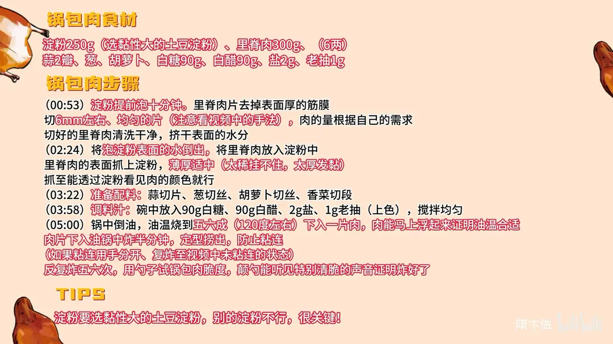

锅包肉
隋卞一做。里脊切 6mm 厚片，挂黏性大的土豆淀粉 250g；五六成油温（120℃ 左右）下锅炸半分钟定型，反复炸五六次到颠勺有声；白糖、白醋各 90g 调汁。
原视频：https://www.bilibili.com/video/BV1Q4qPYhEdE
食材
里脊肉、淀粉 等 10 样
| 类别 | 用料 | 用量 |
|---|---|---|
| 主料 | 里脊肉 | 300g（6 两） |
| 主料 | 淀粉（土豆淀粉） | 250g |
| 配料 | 蒜 | 2 瓣 |
| 配料 | 葱 | 适量 |
| 配料 | 胡萝卜 | 适量 |
| 配料 | 香菜 | 适量 |
| 调料 | 白糖 | 90g |
| 调料 | 白醋 | 90g |
| 调料 | 盐 | 2g |
| 调料 | 老抽 | 1g |
步骤
- 泡淀粉：淀粉提前泡十分钟。
- 切肉：里脊肉片去掉表面厚的筋膜，切 6mm 左右、均匀的片（注意看视频中的手法），肉的量根据自己的需求；切好的里脊肉清洗干净，挤干表面的水分。
- 挂糊：将泡淀粉表面的水倒出，把里脊肉放入淀粉中，里脊肉的表面抓上淀粉，薄厚适中（太薄挂不住，太厚发黏），抓至能透过淀粉看见肉的颜色就行。
- 准备配料与料汁：蒜切片、葱切丝、胡萝卜切丝、香菜切段；碗中放入 90g 白糖、90g 白醋、2g 盐、1g 老抽（上色），搅拌均匀。
- 炸制：锅中倒油，油温烧到五六成（120℃ 左右），下入一片肉，肉能马上浮起来证明油温合适。肉片下入油锅中炸半分钟，定型捞出，防止粘连；如果粘连用手分开，复炸至视频中未粘连的状态。反复炸五六次，用勺子试锅包肉脆度，颠勺能听见特别清脆的声音证明炸好了。
小贴士
- 淀粉要选黏性大的土豆淀粉，别的淀粉不行，很关键。
- 料汁以片尾卡为准：90g 白糖、90g 白醋、2g 盐、1g 老抽；视频口述糖醋各 60g，是另一档偏酸的配比，按口味取。
- 复炸次数看状态：卡片写反复五六次，视频里说两三次，以颠勺能听到清脆的「哗啦」声为准。
讲解要点
难度：★★★★☆（糊的干稀、油温、反复复炸三处都得看状态，新手最容易炸成软壳）
为什么这么做
- 土豆淀粉提前泡十分钟以上，可以头天晚上就泡：泡透沉淀后倒掉一部分上面的水，糊才黏得住肉、炸得起酥壳。
- 只用纯土豆淀粉，不掺地瓜粉：酥壳主要来自淀粉，黏性大的土豆粉才能形成蓬松的壳；家里炸不起泡，多半是淀粉选错了。
- 肉切 5-6mm、厚薄均匀：太薄挂不住糊、表面不酥，太厚挂糊发黏；均匀才能同一时间熟。
- 糊要偏干，薄薄一层、透过淀粉能看见肉色：像酸奶那样稀的糊炸的时候不易发酥；这层糊就是给肉「穿了一层纱」。
- 排酸肉洗净挤干就行，不用泡血水：老式不排酸的肉才要泡，血水不去炸出来肉是黑的。
- 五成油温（约 120℃）下锅，肉片入油立刻浮起就是温度合适：先定型捞出，再反复炸两三次，中间让油温重新升起来，逼出水分才够脆。
- 糖醋汁 1:1，另加 2g 盐、1g 老抽上色，不放味精：比例对了才「酸的不呛、甜的不腻」。
- 葱丝、蒜片、胡萝卜丝、香菜段放进汁里一起熬到起泡：汁带上复合味，浇上去才不是单纯的糖醋。
容易翻车
- 糊太稀、或用了地瓜粉，下锅不起泡、挂不住，成品软趴趴。
- 油温过高外焦里生，过低则吸油、壳不酥。
- 只炸一遍就出锅，凉一点就软，颠勺听不到「哗啦哗啦」的脆声。
- 汁熬过头会发黏、挂旗甚至返砂，汁不够又挂不满肉。
- 肉没挤干水就挂糊，下锅脱糊。
热评补充
- 有观众说「没明火，尽力了」：家用灶火力小、油温掉得快，复炸前一定要把油温重新烧上去再下肉，否则炸不脆。
原片尾卡

原片文案
AI 字幕校准稿
这是一个新的系列：我们出去吃点好吃的，就请店家过来教大家做，省得我复刻了。第一期请的是水一方的老板，在北京吃的最规矩的东北菜。
就这锅包肉，外面是一个酥壳，很酥；这个酥就是纯淀粉加糖醋汁，汁儿就是糖醋盐，最主要是那蒜和香菜那味道出来了，所以你吃的这个味，它里边是有复合味的。这店能做出这水准，味道挺好的。
淀粉需要先泡一会儿，泡个十分钟。把肉先切上。这个肉的筋膜，把太厚的地方剔一下，不用都剔，其实下边那层是可以吃的。然后改刀：里脊宽度还可以，给它一劈两半。厚度不用太厚，5 到 6mm，切匀了就行——一定要匀，这是关键点。来个半斤左右吧。
这个再洗一下。现在的肉都排酸以后，不用泡的时间长；以前老家的肉不排酸、发红，你就得泡，把血水必须泡出去，要不然炸出来肉是黑的。现在的排酸肉就不用泡，洗一下就行。
然后把泡淀粉的水倒出去一部分，把肉放里，淀粉都抓上。不能太稀了，像酸奶那样炸的时候不易发酥，这个必须得稍微干一些；薄厚适中：薄了挂不住、表面不酥，太厚了发黏。淀粉一定要选稍微黏性大一些的土豆粉，纯土豆粉，地瓜粉不行。你看这样就可以，薄薄的，透过淀粉能看见肉的颜色——肉就穿了一层纱。也可以再搁点油锁住，不过我平时几乎不搁油。
配料就切片、切丝：蒜切片，两片够了；葱切葱丝，直着切就行；胡萝卜也切丝；香菜切段，梗是最好的，好看也好吃。料汁：白糖 60 克，白醋也 60 克，这是六度白醋，糖醋一比一；再来点盐，2 克，不放味精；再来点老抽，一克，调颜色。尝一下，可以就行。
油就是大豆油，家里边食用油，花生油、大豆油、色拉油都可以。酥脆感主要还是来源于淀粉。油温五成热，120 度左右就可以下。淀粉多泡一会儿，我一般都头天晚上就泡一部分，挂在肉上肉就不稀、不出水了。
来一片试一下，下去能立马浮上来，说明油温合适。炸一会儿捞出来再炸一遍——后下的和前下的温度不一样。搁这勺子上听脆度，现在这样不行，还是软趴趴的，听不出那个动静；你就得让它「哗啦哗啦」的，搁这里一颠特别脆，那个动静就好了。这得反复炸个两三次：炸一下出来降降温，降温完了油温再让它起一起。看这颜色挺黄了，还发闷发不出声，就还差；哗啦哗啦的，这回好了。要是炸起来不起泡、一直软趴趴的，那多半不是火的事，是淀粉选得不对。
把炸好的肉搁在上面，把葱和蒜放在里面，把这汁倒里面熬一下，熬成起泡就行了，就下锅，挂旗了差不多就行。出锅装盘，把好看点的放边儿。你尝尝，听这声——真酥，酸甜口，酸的不呛、甜的不腻；外皮是酥脆酥脆的壳，这个淀粉选得真好，里边的香菜、葱丝、蒜片的味全都出来了，所有的汁都挂在锅包肉表面。一口咬下去酥脆，里边的肉片还有着汁水。
而且它里面有香菜和胡萝卜的那种复合味。好吃，真的好吃。东北菜只要东北人来教，才有那个感觉。具体的比例你们不用记，都会给你们放个片尾。